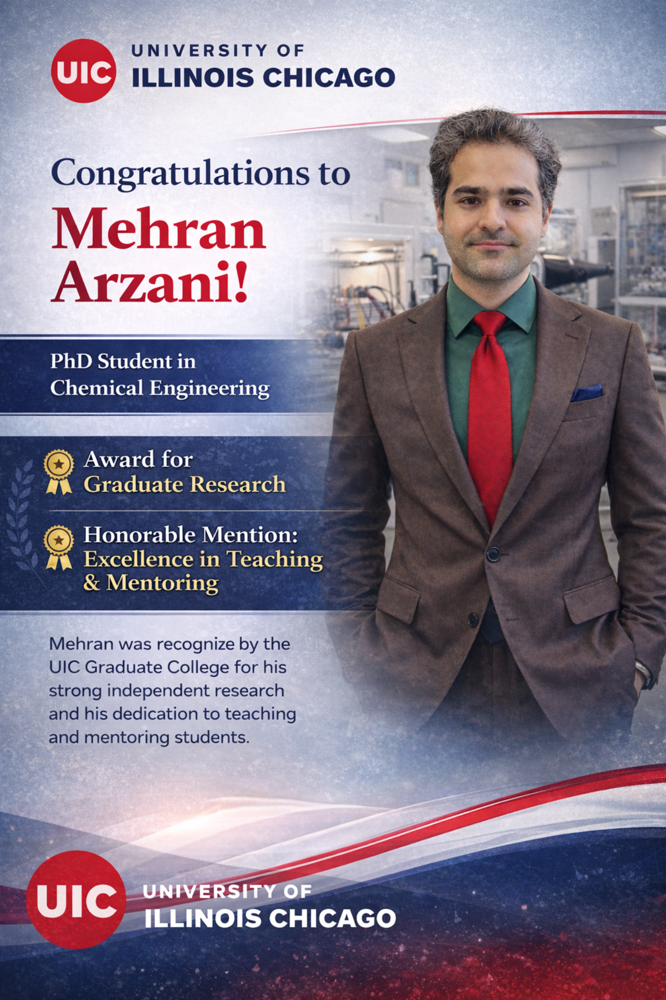

01
2026 · Teaching
Excellence in Teaching Assistance
College of Engineering · University of Illinois Chicago
Recognition for research, teaching, mentoring, leadership, and academic excellence.
7 distinctions

Recovered from the website asset archive.
2026 · Teaching
College of Engineering · University of Illinois Chicago
2026 · Mentoring
University of Illinois Chicago
2025 · Research
Graduate College · University of Illinois Chicago
2025 · Academic Excellence
University of Illinois Chicago
2025 · Professional Development
Office of Global Engagement · University of Illinois Chicago
2024–25 · Research Communication
University of Illinois Chicago · The Electrochemical Society
2013 · Academic Excellence
Azad University · Esfahan